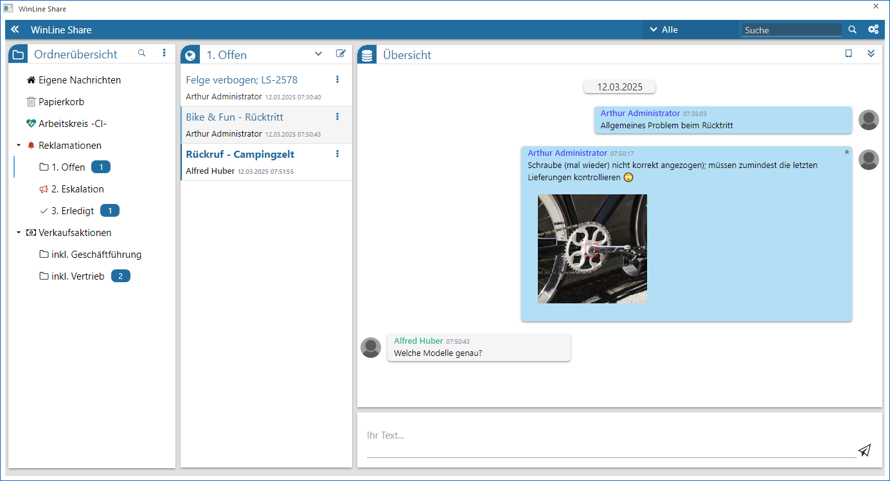

Das WinLine Share ist die Kommunikationsplattform der WinLine und kann in jeder Applikation über…
1 CRM
1 WinLine Share
… oder die Quick-Info-Leiste des Cockpits aufgerufen werden. Es bietet u.a. die folgenden Funktionen:
ü Chats und Nachrichten
Ähnlich
bekannter Messenger Dienste können Chats zwischen einzelnen Mitarbeiter oder
ganzen Gruppen geführt werden.
ü Dokumente
Innerhalb von Chats
können Dokumente zwischen den Teilnehmer ausgetauscht werden.
ü Sicherheit
Die Daten des
WinLine Share verlassen die eigene IT-Infrastruktur nicht, d.h. auch sensible
Dokumente und Informationen bleiben immer "im" Unternehmen.
ü Berechtigungssystem
Über eine
Ordnerstruktur kann ein individuelles Berechtigungssystem für die Chats des
WinLine Share geschaffen werden.
ü Mobil
Das WinLine Share steht
in der WinLine mobile zur Verfügung.
Hinweis
WinLine Share ist Bestandteil des WinLine CRM. Sollte der Benutzer keine Rechte aufweisen, so kann das Programm nicht gestartet werden.

In den folgenden Kapiteln werden die einzelnen Bereiche von WinLine Share im Detail erläutert.
ü Übersicht
In diesem Kapitel wird
der Aufbau des WinLine Share beschrieben.
ü Kopfleiste
Die Kopfleiste dient in
erster Linie zum Ausführen der Suche. Zusätzlich kann über diese die Einstellungen geöffnet und die Ordnerübersicht zu- und aufgeklappt
werden.
ü Einstellungen
In den Einstellungen
können individuelle Einstellung für die Anzeige und das Programmverhalten
getroffenen werden.
ü Ordnerübersicht
In der
Ordnerübersicht wird die Ordnerstruktur des WinLine Share dargestellt und
zusätzlich auf ungelesene Nachrichten hingewiesen.
ü Chatübersicht
In der Chatübersicht
werden alle Chats des Ordners dargestellt.
ü Chatverlauf
Im Chatverlauf werden
alle Nachrichten und Uploads eines Chats ausgegeben.
Hinweis
Auf neue Chats bzw. Nachrichten wird in der WinLine über die Quick-Info-Leiste des Cockpits und über die Statusleiste hingewiesen.
Buttons
Ø Ende
Durch Drücken des Buttons "Ende" bzw. der ESC-Taste wird das WinLine Share geschlossen.
Ø Aktualisieren
Mit diesem Button kann das WinLine Share manuell aktualisiert werden, um neue Ordner oder Chats angezeigt zu bekommen.
Ø Upload-Vorschau
Ist dieser Button aktiv, so werden innerhalb der einzelnen Nachrichten die Uploads angezeigt.